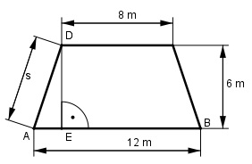

Pythagoras Aufgabe 77 Berechnen Sie von dem gleichschenkligen Trapez den Umfang U in cm.

Satz von Pythagoras im Dreieck AED: 12 cm – 8 cm AE = -------------- = 2 cm 2 s2 = ED2 + AE2 s2 = 62 cm2 + 22 cm2 = = 36 cm2 + 4 cm2 = 40 cm2 |√ s = 6,3 cm U = 2*s + 12 cm + 8 cm = = 12,6 cm + 12 cm + 8 cm = = 32,6 cm